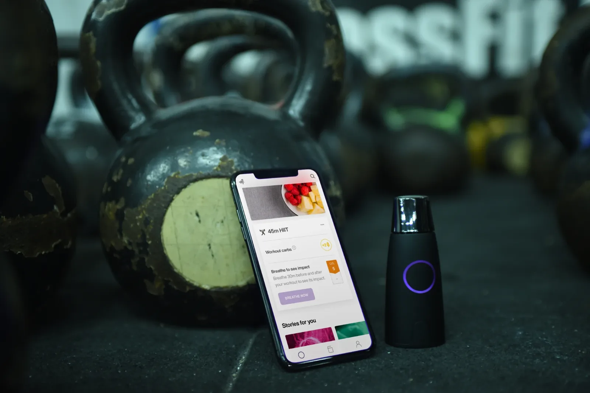

Metabolic Flex coaching
Use every tool. Keep only the habits.
A science-driven approach: medication, hormones, a metabolic breath device, training and nutrition, coordinated by a coach who checks in with you every two weeks, until behavior does the work.
Take the 2-minute Metabolic Score
Science-drivenEvery part of the program is built on published research. See the studies.
Keep your muscleLose fat without losing the muscle that runs your metabolism.
Know when to eatFree Lumen metabolic device ($249 value) with your program: see fat vs. carb burn each morning.
Every tool, in orderGLP-1s and hormone therapy via licensed providers when appropriate.
Coach every 2 weeksDiscipline, accountability, consistency: a plan that becomes a lifestyle.

Free with your program · $249 value
Know when to eat
One breath into the Lumen each morning shows whether your body is burning mostly fat or carbs. That's your metabolic flexibility, measured daily. Your coach uses it to time your meals and carbs around your training.
Built on evidence
Why this approach
58%lower risk of type 2 diabetes with a structured lifestyle program in the Diabetes Prevention Program.
25–40%of weight lost on GLP-1s can be lean mass without a structured strength program.
~80%of insulin-driven glucose uptake happens in muscle, your metabolic organ.
8 in 10adults with pre-diabetes don't know they have it (CDC).
Meet your coach
Coach Gui, GFC Xtreme Fitness
Every two weeks you meet with the same coach, who reads your Lumen and check-in data and adjusts your training and nutrition so you keep your muscle and burn the fat.